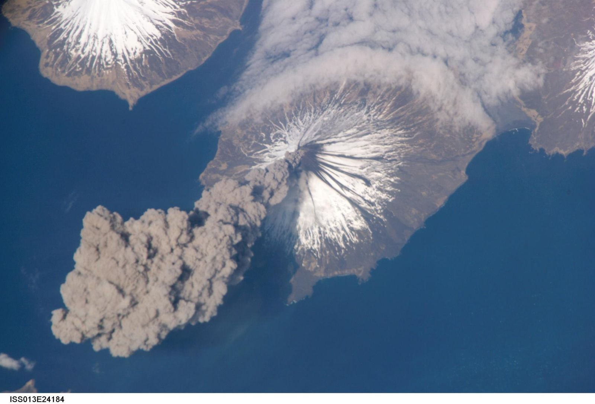
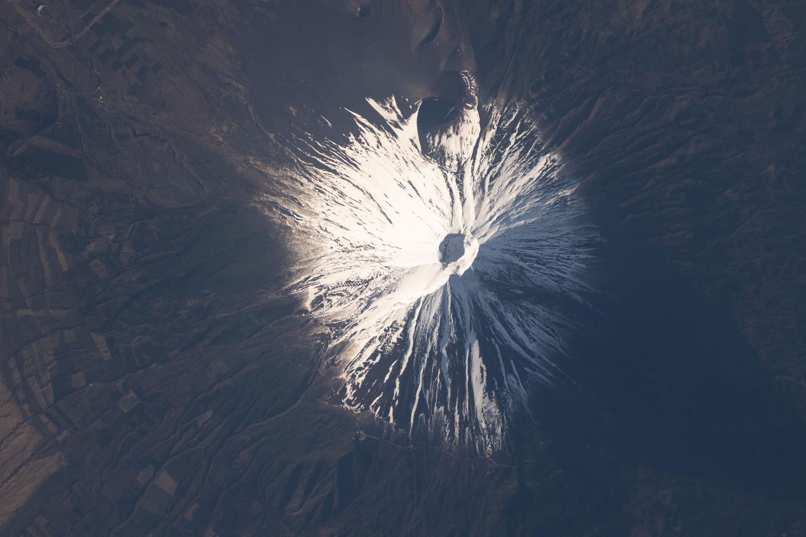

Part 3: The Changing Surface · Chapter 12 of 15
Volcanoes
Where molten rock reaches the surface, and why some eruptions explode.

A volcano is any opening in the crust where molten rock, gas and ash escape. Below ground the molten rock is called magma; once it reaches the surface it is lava. Magma collects in chambers a few kilometres down and rises through cracks when its pressure builds.
Runny or sticky
How a volcano erupts depends mainly on its magma. Basalt magma is low in silica, hot and runny. Its gas escapes easily, so eruptions are usually gentle, with fountains and rivers of lava that build broad shield volcanoes such as those of Hawaii and Iceland. Magma richer in silica, such as andesite and rhyolite, is thick and sticky. It traps gas, and when the pressure is finally released, the gas expands violently and blasts the magma into ash and pumice. These explosive volcanoes typically build steep cones of layered lava and ash, such as Mount Fuji.
Where volcanoes are
Most volcanoes lie along plate boundaries. Along mid-ocean ridges, mostly hidden under the sea, basalt erupts as the plates separate. Above subduction zones, chains of explosive volcanoes form, including the Ring of Fire around the Pacific, which hosts most of the world's active volcanoes. A few volcanoes, such as Hawaii, sit over hotspots far from any boundary, where hot rock rises from deep in the mantle.

Key terms
- eruption
- The bursting out of lava, gas and ash from a volcano.
- lava
- Molten rock that has reached the earth’s surface.
- basalt
- Dark volcanic rock formed from runny lava. It wells up at mid-ocean ridges and hotspots.
- andesite
- Volcanic rock from lava that is lighter than basalt. It is common where one plate sinks under another.
- shield volcano
- A broad, gently sloping volcano built from great flows of runny lava, as in Hawaii.
- hotspot
- A place far from plate edges where magma rises from deep in the mantle, such as Hawaii.
- Ring of Fire
- The chain of volcanic islands and mountains around the Pacific Ocean, above sinking plate edges.
- obsidian
- A natural black glass made when granite magma cools very quickly.
- pumice
- A very light, frothy volcanic rock full of gas bubbles.
Check your understanding
Think of your answer, then open each question to compare.
Why are some eruptions gentle and others explosive?
Runny, low-silica magma lets gas escape easily; sticky, high-silica magma traps gas until it bursts out violently.
What is a hotspot?
A place where hot rock rises from deep in the mantle, producing volcanoes away from plate boundaries, as in Hawaii.
What is the Ring of Fire?
The chain of volcanoes and earthquake zones around the Pacific Ocean, above subduction zones.